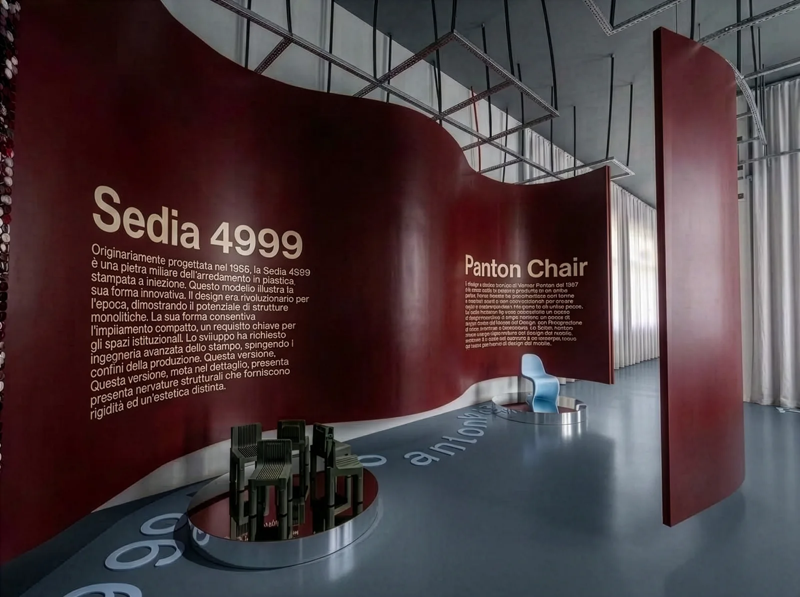
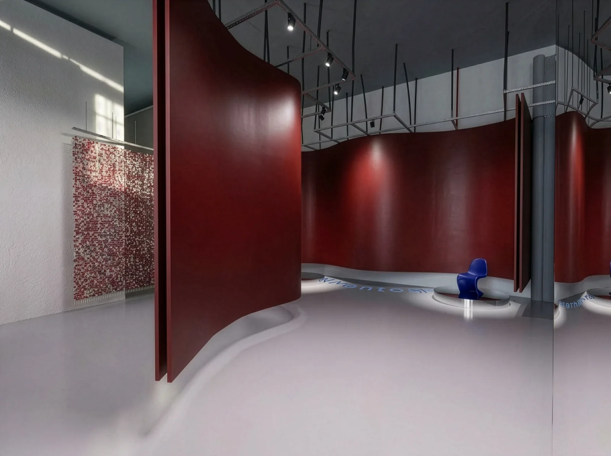
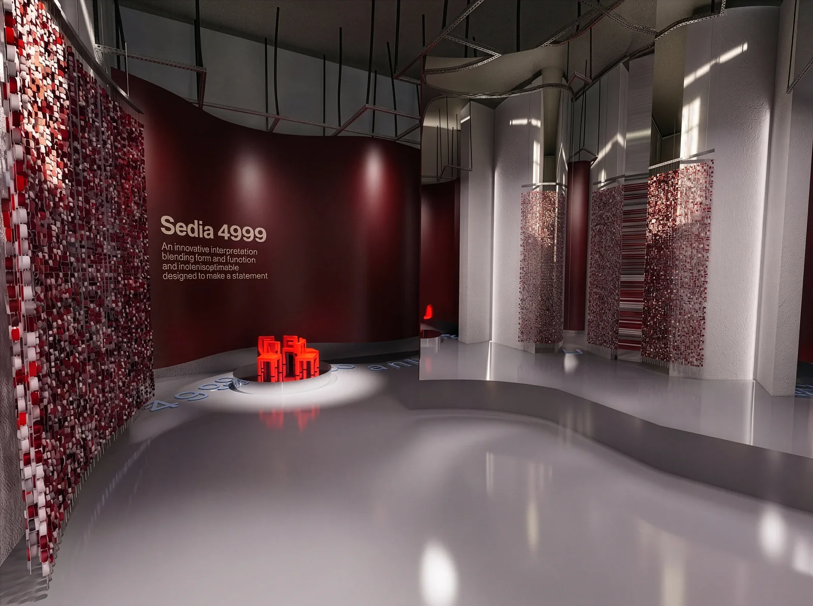
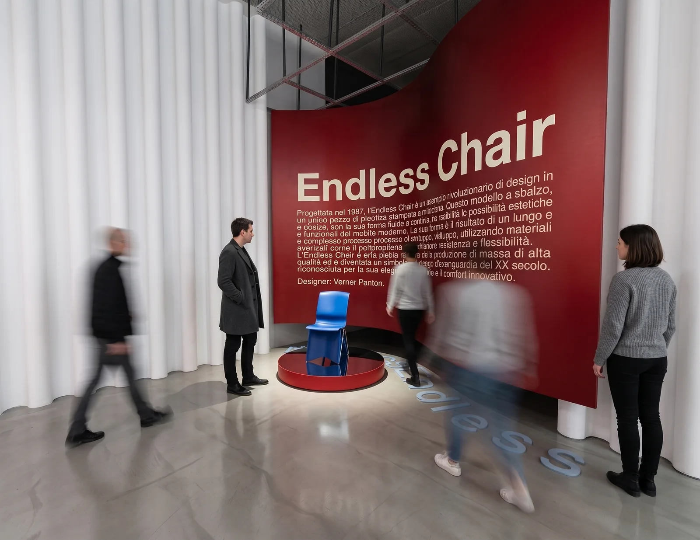
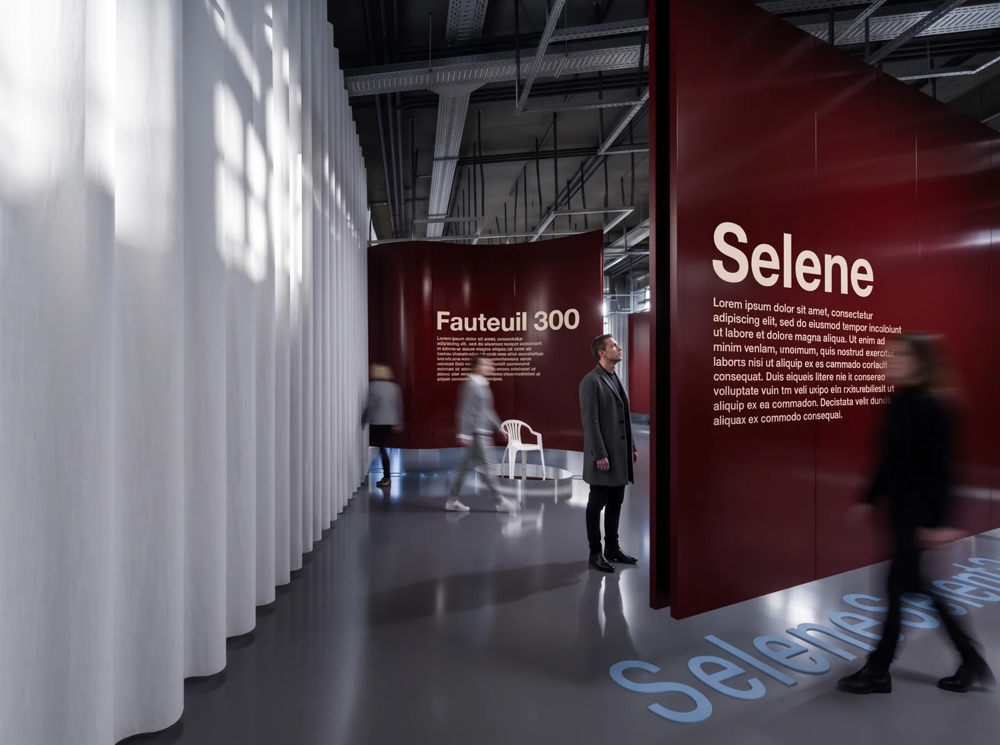
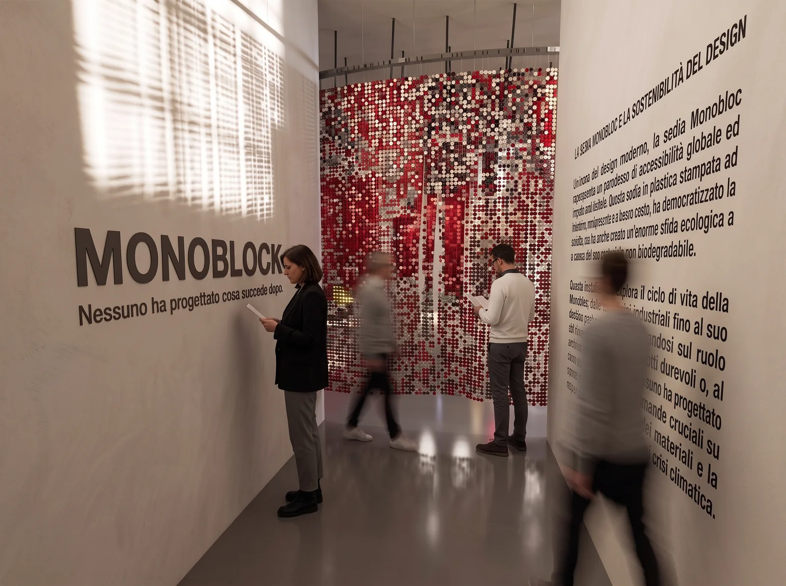
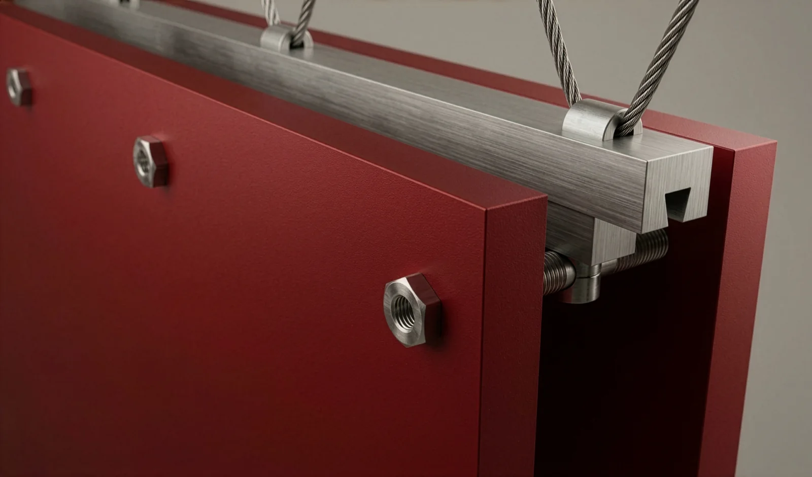
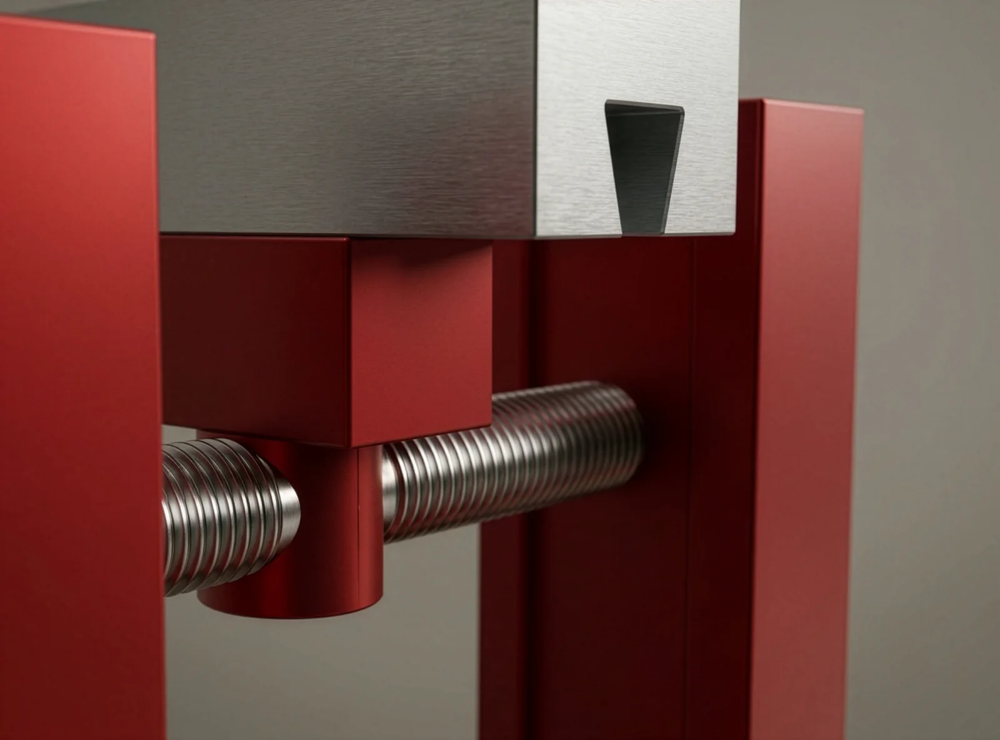

MONOBLOCK
Il progetto si ferma al cancello della fabbrica.
- Contesto
- Tesi di laurea · Design degli Interni
- Corso
- Laboratorio di sintesi finale I3 · Prodotto e interni
- Sede
- Politecnico di Milano · A.A. 2025/26
- Relatore
- Marcello Galbiati
- Autore
- Filippo Antonio Visentin
- Ambito
- Tesi · Exhibition design · 2026

Che cosa succede quando il prodotto ha finito di servirci?
La mia ricerca parte da una sedia ordinaria per allargare il campo del progetto: dall’oggetto alle condizioni che ne determinano il destino.
Una sedia comune diventa il punto di partenza per interrogare il ciclo di vita degli oggetti. MONOBLOCK mette in scena la distanza tra una produzione ottimizzata e un fine vita ancora da progettare.
L’allestimento collega storia, materia e responsabilità. Griglia, pannelli e tende costruiscono il percorso; un’installazione di sei stampanti 3D produce oggetti che diventano subito scarto. L’accumulo rende visibile ciò che la produzione lascia dopo di sé.
Una sedia, una contraddizione
La tesi usa il Monobloc come protagonista di una domanda sul design industriale. La semplicità del prodotto e l’efficienza del processo non risolvono da sole la gestione dopo l’uso. Il percorso intreccia la storia delle sedie in plastica, le tecniche produttive e il problema del fine vita. Le sedie storiche sono oggetti della ricerca, non prodotti disegnati per questo progetto.


Lo spazio come argomento
Una griglia modulare di alluminio, pannelli e tende semitrasparenti organizzano la mostra. I moduli quadrati di 50 × 50 cm costruiscono un’infrastruttura di sospensione, mentre i tessuti definiscono soglie senza isolare completamente le aree. La possibilità di separare alluminio, acciaio e tessuto fa parte del tema: l’allestimento deve interrogarsi anche sul proprio smontaggio.
Produrre, lasciare, ricominciare
Sei stampanti 3D inclinate producono oggetti che, una volta completati, scivolano a terra. La macchina riparte e nessuno raccoglie il risultato: l’accumulo rende visibile il tempo della mostra. L’installazione mette in discussione una produzione che sa controllare ogni fase fino all’uscita dell’oggetto, ma non ciò che avviene dopo.

Processo — fotografie
5 fotografie
F.04Postazione Endless Chair 
F.05Postazione Selene 
F.06La parete manifesto 
F.07Dettaglio — pannello e binario 
F.08Dettaglio — connessione filettata